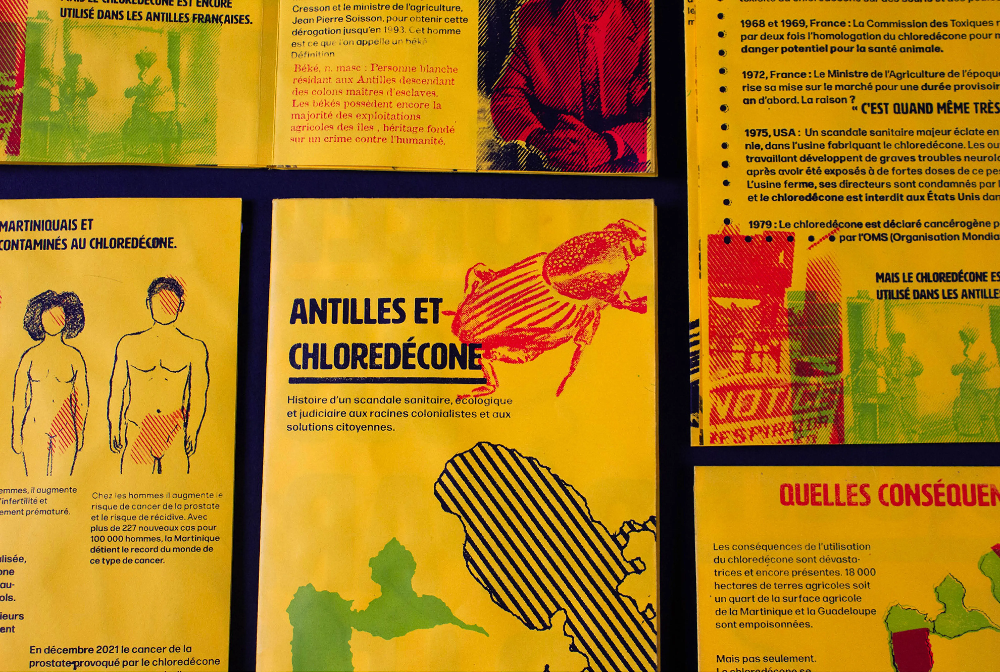

Chlordecone and citizenship
Conception and screen printing of an informative leaflet and poster on the Chlordécone sanitary scandal in French West Indies
→ This project appeared on Nicolas Glimois' documentary "Les antilles empoisonnées : La banane et le chlordécone", broadcasted on French Public Service TV in November 2024.
